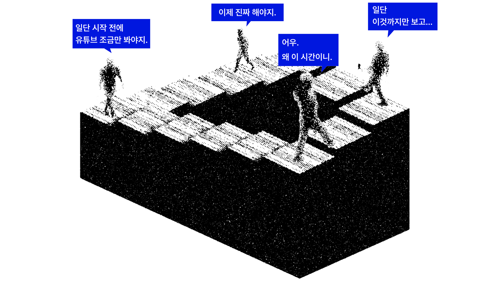

당신의 완벽한 감시자, 믿을 수 있는 파트너
WATCHER
해야할 일을 두고
미루기 딜레마에 빠진 당신,

할 일 하나를 끝내기 까지 많은 경로를 만들어내는 당신,
습관형성에 강제성을
만들어줄 AI 감시자
‘WATCHER’
WATCHER는 당신의 작업에 효율성을 높이는 믿음직한 파트너들입니다. 자신에게 맞는 형태와 정도를 커스텀하면 제작되어 배송되고, 설정값에 따라 사용자를 감시하면서 소비되는 것을 제한시킵니다. 습관적인 미디어 소비, 나태한 행동들을 더 이상 방치하지 않는 생산적인 일상으로 이끌어주도록 도와줍니다.
나와 맞는 WATCHER 를
직접 선택하고 받을 수 있어요.
사람마다 생활의 방식이 다른 만큼, WATCHER 또한 당신의 성향에 맞춰 제작돼요. 나에게 맞는 WATCHER 유형을 직접 커스텀해보세요! 주문과 동시에 생성되어 방문까지 이어집니다.